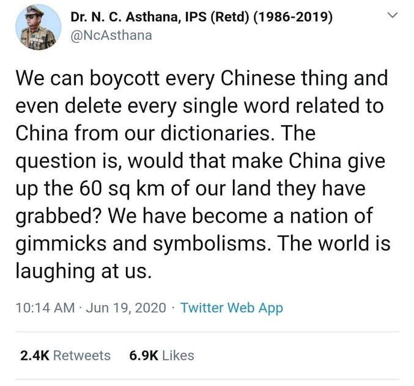
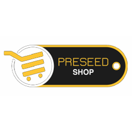

We are looking to bring a manager to manage these product ideas full time. If you have any
interest and skill to find and
manage inspired hackers, hustlers, and designers for our ideas, this may be the place for you.
Read here
for more and then apply here if you will.
We are also looking for a new age marketer in our team, if you are interested in this opening or
are willing
to learn, read more here. If you understand, apply here.

The origin of Step 3 happened for we wanted to create a platform
where we could share our own ideas and enable you to take up those ideas to co-create with
us,
for we can’t shape so many ideas alone. The ideas range from food we eat to technology we
use to
the government systems that run us.
Our mission through Step 3 is to create entrepreneurs out of
even those who do not yet have an idea they were willing to back, let alone a b-plan or a
prototype. Even those who do not even have the technology or design skills. All they may
have is
a will to do something extraordinary someday. It may create more significant altruistic
entrepreneurs in the world than any other entrepreneurial initiative or culture has done in
the
past.
“A year from now, you will wish you had
started today.” -Karen Lamb
If PreseedApp were a guy, he would have been the go to guy
for anyone looking to start.
So, it is being designed as a digital platform, made up of a community of
hackers, hustlers, designers and mentors who aid each other in ensuring the right idea is
thought. That right idea is the first step to success.
We Are
We believe that one of the most
understated reasons, or largely a non-stated reason to fail is - to not start. Leave
the matter of success and
failure to perseverance; there is nothing more to success and failure. This is the
fundamental the ideology of
the PreseedApp is founded upon.
If we manage to give you a start, we have done for you what we have
startedPreseedApp to do. To do so, we are
building a world class system through this app, to help you lay a long lasting
foundation for planting your
seed, your idea.
Debating detailed elements of the vision of a startup as collaborative questions and
answers,. This step will add this layer to Chattodo.
Step 3 -
To then help build for the world, a more - original thinking,
conscious, and enterprising human resource.
We hope you
clicked on the
words, “among entrepreneurs, towards” on the cover page of chattodo.preseed.in. If not,
do it. This
step is all about what's mentioned in that click.
Read the
description in YouTube of the video below to
know about what we are
doing to create the world of ideas, upon which productivity can be induced,
by
mere chats on Chattodo.
I
spend a lot of
time, years, just identifying
profound
(I am not using the word profound loosely) inter-related problems of the
world
and imagining startup ideas that occur thereafter seeming like solutions to
those problems. At the outset I started Preseed to help my web ideas
transition
into minimum viable products at near 0 monetary costs, by inducing
the
culture of — inspiration replacing money. The last few years or more of my
time
has gone into setting that internal culture of Preseed where I fill people
with
so much truth and inspiration that salaries become secondary. This culture
is
made up of -
Communication of the idea philosophically.
Hacker, hustler and designer discovery.
And management of all these using tools like Trello, Slack, Google
Drive, and Github.
There will be comments feature too. It will be a way of collecting testimonials
by those who have had the chance of having discussed the idea with us. (Rest of
the ability of commenting on the idea for the purpose of understanding the
idea - will be handled at MyIdealist). Here the commenting will serve the
purpose of marketing of your ideas.
MyIdealist will lead to creating a network of evangelists for your ideas. They
follow you based on your ideas and not because of your controversies.
In
such a way
that someday these ideas from MVP
become
independent startups.
These exact
lessons are now being opened and
product-ified so that everyone in the world with an idea, just a
vague
half baked idea, can have a playground to build upon that itch into a
validated
MVP, and then an early stage startup, with or without money. It meant
creating a
web platform that makes potential entrepreneurs become productive upon their
own
ideas in the world of social internet made up of so much noise and a new
devil
—The cheap dopamine of current social networks.
MyIdealist is
designed to take care of non-technical
founders, especially well, if they are good at articulation of their idea.
Courageous
people, build startups, not waste time on
Facebook, Twitter, Whatsapp or; in sitting for college competitions. Even
those
collaborating on fresh ideas of others are people of ideas.
MyIdealist is
also designed to assist those who are
courageous enough to join a startup/idea for equity as a reward instead of
salaries. Remember I said, I want to change the culture of capitalism
itself,
perhaps by offering it more altruism. This is my initiative to give an
opportunity to those who already seem fit to startup and are crazy enough to
take the idea forward tirelessly. We believe that this can be a perfect
platform
for those who do not have an idea yet but are still fit already to take up
something extraordinary. It will also enable students to intern with or
train
with existing very early-stage startups for a considerable role from the
network
of startups here. Students learn additionally for the journey and the origin
of
these ideas are covered well on MyIdealist with the selectees and encourage
them
to participate in the making of those ideas.
The problem we
wish to solve for these courageous
ones
-
The ‘Nay, are
you crazy’ problem — The first
problem for everyone who wants to start is that there is a lack of ‘go to
guys’
or organizations to seek suggestions and necessary insights to get started
with.
There are more ‘naysayers’ than the ‘yesayer’. This, in our
perspective,
is the mother of all the problems.
The Right set of
information
and the Right ‘ye’ at the Right time has the potential to allow you to
reinforce your inner voice upon yourself. And that is what you need … to
start!
Startup is a
lonely world. We are building this
feature,
MyIdealist to change that for you by building a community the members of
which
are willing to be a part of your lonely world.
MyIdealist
feature can be imagined as web forum which
will enable millions of our users to use our network effect due to this app,
to harness the possibility of having very intelligent people from all over
the world helping set the groundwork for seeing the vision, as they propose
it over dialogues with you, right there on Chattodo, very
objectively.
This articulation of ideas and its various key questions in the very words,
is
everything we wish you start with. Einstein said, and I don't quote, "If you
can't say it simply, you don't know it enough”. So know it, as best, and as
simply as you can.
In this forum, from an idea articulation to the way the business, in form of
a slide
deck should be seen even before getting attempted. This app is all about the
thought, as if the business, but just the thought. The story of it. For
stories will sell, before ideas do.
The one who
brings children of ideas, on one
communication platform for the purpose of development of original ideas,
would
have created for the world, a social network of action, upon ideas as we are
looking to do through this step 3. The metaphysical impact of it could be
far
deeper than that of Facebook.
Unique feature
of MyIdealist:

This feature
enables startups and other ideas to
crowd source
investment, by way of preorders. However, they are free to sell if they
already
have goods and services ready. This feature can change the way startups or
ideas
have been raising money at a scale larger then what Kickstarter enabled.
Here
anything can be ordered, so long as you have a powerful story.
In the next
step you will notice we are headed to
disrupt the secondary education system. To truly disrupt the
education
system is to create an environment where people can think of original ideas.
This is the category of people we want to create in the world.
A piece that concerns the job in hand of managing the Preseed community
better. This feature will be about the questionnaire for founders, feature
to upload a deck, a feature to exchange email quality messages.
Only a product 'questionaiteapp' can achieve that level of excellence
between the flow of communication I expect with you, dear founders. The
solution to this concerns holds lot of importance to me and hence Preseed.
Ensure you like an obedient team member achieves this for Preseed. Find or
inspire a guy to build the tech layer of this product. This product is
called from here on, Preseed app. You are not optimising the potential of
Preseed's culture for maximum impact globally, if we don't build this
feature.
Myidealist is also an entrepreneur identity and connect product ( more like
a new-age contact app for entrepreneurs ). That is why it can't be loaded
with so many questions. It will just have an idea and, 2 line description,
such that, the entrepreneur could be identified as a human of an idea.
I
am saying in
step 4 that there is an education
in
productivity (collaboration), but, for there is even better education in
productivity upon ones own ideas, so there was step 3. Ideas are
curiosities that we want the students of the future to build themselves
upon,
seamlessly.
So
we decided to
work on building a tool that can
make
the world more productive through such communication and
collaboration
integrated with an idea development platform called MyIdealist as a
feature
on it someday, to make the world productive upon ideas.
An idea can become a cause when liked by many users
Cause feature is the platform inside for running charity campaigns online.
It let’s people start a campaign, create a custom link and QR code and
direct all their promotions into a single point so that each campaigns get
more done efficiently. For a person who want to donate he gets to find
curated campaigns which are both verified and easy to make the donations to.
Cause features crowdfunding groups which lets a group of people back a
campaign together.
If you have your self and your thoughts profiled here based on our form
fields, many will not only notice, but will also understand you better. The
network of people that will get built from here on, around you and your
idea, will be the network of your future contributors/collaborators/teams.
Ultimately, the social network I mentioned above via Chattodo is for the
men and women of ideas, primarily. My idealist makes Chattodo its users’ place of identity
via
their idea and not merely via their educational degrees or professional qualifications as on
LInkedIn.
Because we want the good ideas to get atleast one good chance to see the light of the day. The biggest challange we feel that 'an app' out there has to face is to get it's first set of 1000 users to get the idea customer validated atleast.
Users will submit the following -:
App Name and link
App in one line.
Founders Story so far.
Upto 3 similar apps but not the same (with notes about how they are similar)
Country you are building in/for.
Note-: We do discard ideas if we are not able to validate your idea because either the problem you are solving is not a problem we resonate with or the solution is crappy or the problem is already getting solved.
Subscribers, with a little bit of your time and attention, you could help us help 100s of very worthy entrepreneurs and apps get customer validated which is what an investor looks for in an app before he invests his monies on it.
Do you wish to save the digital entrepreneurs of your country?
If yes, subscribe to the prototype launches on Chattodo's myidealist feature.
When you hear of a new product, do check it out, give your feed back as a user.
Our goal is to launch one MVP everyday in the emails of our millions of subscribers. While no MVP would be an idea we don't like.
So, at its core, Preseed is building a A SOCIAL NETWORK OF ACTION
UPON
IDEAS, in fact.
We have researched for years, the matter of enabling someone with a mere
idea,
over a democratic web forum. One may say, if you were an idea, just an idea, how should you
have
been profiled just at this stage, such that, who ever you interact with, has clearer insight
into
what you are trying to become. Isn't that what people communicating with the startup know.
Side note -: It’s still simpler to
imagine, a social network of action. It’s more difficult to imagine a social
network
of action upon ideas. It’s even more difficult to create one, one that works. We are
talking
about a Social Network of action first, then we are talking about a social network of
action
upon ideas.
In step 4 we are talking about a social
network of a new model of study for people of ideas. Read on.
Step 4 - To disrupt the secondary education system, for ‘humans of ideas’ right
from within chats on Chattodo.
Chattodo will become the app that will save the fading creative lives of
a lot of students who want to learn and present their education earned, as they collaborate
with
others on some common original idea, rather than robotically prepare to write exams online
or in
colleges, merely to fetch degrees.
So, making communication more
actionable is the way
forward
for education upon collaboration. That is why step 1 was necessary.
‘Education upon collaboration’ is my solution for the much-needed change in the
archaic education system through Chattodo, a communication and collaboration
app.
This is fundamentally different from how you have looked innovation in Education
by
the virtue of education policy changes in India or incremental innovations in
the
name of education with apps like BYJU.
May I go a step further and say,
‘and collaboration upon
ideas’ all the way into becoming startups. It is for this that we have to take
step
3 before we get started with the works of AI of Step 4, which will measure
education
by capturing communication and collaboration between two people chasing a common
goal, with their permissions of course. Creating both a world of education
upon
curiosity and education upon collaboration.
Capability and Deliverability, not exams should be measures of education
gained
and it is these that should translate into educational degrees. The
fundamental
reason we embarked on the journey to build Chattodo is to disrupt the
education
system for people of ideas whose learning must be measured by the
accomplishment
of, ONE TASK DONE AT A TIME.
The solution to the problem of a
4 walled secondary
education system for children of ideas is, as much a software as it is a
cultural
one, at home— So there will be a module for parents of children under 18 to
monitor
the education their children are earning here.
Know more about the probable stages and
impact of Chattodo
from its beginning to its maturity towards education disruption and
freedom...#ai,
#blockchain, #chatbots, #hardware, #vr
Note -: When we get to our AI
phase, we will build our
AI for 1 reason at its core - to protect you from negative influences, as
against the current AI realm which is focused at selling you products and
services. In fact, our AI will measure your health based on your chats and
recommend to you breathing patterns to follow based on that analysis. One day
into the future when our AI is merged with bio technology, this analysis will
get further improved.
So in the long run, Chattodo is
not just about
communication
and collaboration, but a play between collaboration and ideas, where -
Chattodo is a mobile app where consumers will keep their thoughts, tasks,
notes, web discoveries, voice, communication and ideas. As you would expect
them to keep in a todo listing tool.
My Idealist is its feature which manages the ideas of thinking users. In
MyIdealist such ideas become the identity of that user. It is at this step
of the vision the user of Chattodo makes new human connections upon their
ideas.Thus making it a social network of action, upon ideas.
And,
Spinning out a new education system out of these
using natural language
processing to measure probable education degrees out of accomplishment of
tasks by each user over years. .
Summing up the 4 steps: Like I said, "these have been an
incredible social network of talks. I admire them. But I also know that they are causing
anxiety and noise. Now it’s time for transitioning that culture towards a culture of
action, not only action but action upon worthy ideas. When we are able to do this
with
artificial intelligence, towards understanding user exchanges of years, for quantifying them
as
education degrees — we will consider the education system disrupted, while saving the world
from too much social network of talks".
Ultimate goal of of our app Chattodo, until step 4 is to give its users
something so simple as if a ‘single white blank communication and notes making screen’,
which
will induce and enable the users to build upon their ideas into meaningful early-stage
startup,
regardless of users age, educational degrees, material resources or profession. And if the
user
fails in succeeding in taking their idea to the next level, they atleast have an education
degree that can make them employable.
I agree. I have a huge regard for Naval Ravikant and the Angelist team. So much
regard that a lot of what I do at www.preseed.in is aimed at a partnership with
AngelList to create the most extraordinary company of our times - AngelList. My
conclusion has boiled down to the fact that I need to build my ios and android
app as a communication tool for entrepreneurs on Angellist. So much that, it is
Angelist I want to lauch my chatapp on. That as the first step for mychat app
will steer it into the direction of a company that will while aiding Angellist,
grow on to be bigger than Slack.
Dear Naval Ravikant,
I had bookmarked this article to read later, and as I finish reading it, I
cannot help myself but reach out to you almost immediately on a matter I am
deeply passionate about. Pardon my straightforwardness if you mind please.
In the backdrop of this email, I want to tell you why I feel Angellist could
help in disruption of the secondary education system, for men and women of
ideas. And why I feel having a news feed system on AngelList just as a rip off
of LinkedIn news feed system, not only indicates lack of novelty in AngeList
feed system, but the lack of your team's understanding of the kind of feed
system that will really truly aid entrepreneurs and their team.
I have paid so much attention to that kind of a design for news feed, that to my
mind it looks like a separate product of communication and collaboration built
exclusively for AngelList to start with, by AngelList.
Looking at the pace at which Angellist has grown towards direct online
'collaboration' and information exchange for the entrepreneurial type, makes it
very clear that Angellist has been into only profiling, a little bit into
recruitment and a lot into investment facilitation in a uniquely democratic
environment; while it is worth noting that they have one of the best chances to
also be a tool for collaboration across the entire startup, its partners, it's
customers all the way to productivity and management of productivity. They have
done quite well in fixing the investment side of things, which really is the
first step towards building the culture of ideas. The exact culture I am after
riding upon my vision for a social network of action. I believe my tool will
unleash the power of AngelList in ways unimaginable to most today.
I have covered some ground, not necessarily as per the black and white strategy
of growth on metrics. My strategy for coding this product has always been to
doing it with AngelList. So much that AngelList is at the heart of what I do. So
I want to attempt making this product from within AngelList at a deal where, my
social network of action will be an independent company and the opportunity to
grow the social network of action beyond just AngelList remains in my hand.
The ground I have covered leads me to a vision about the disruption of the
education system as whole in the next 10 years. It will then just be a question
of perspective. That, what does one think education means. In my plan, education
upon collaboration is the way forward.
Education is best earned when building upon an idea and collaborating on it.
Where it is earned from ones leaders' while working on a common goal.
As per my strategy, our Social network of action will become the go to tool for
young teams of startups to learn on topics they require to know, straight from
their leaders, while building their startup forward, on it. And these teams and
startups would have originally built connections on AngelList. These connections
baking into relations and actions will happen all on our Social Network of
action however.
If you find meaning in my words please let me know on nishchal@preseed.in or
here if I could reach you directly on your email with my proposal shortly
please.
Step 5 - To take the world from representative democracy to direct democracy,
led by these 'humans of ideas'.
Nishchal spends half his day thinking about - so many decades of
internet, yet, the basic tenets of democracy remain the same, i.e. often, the false
narratives of our representatives are enough to keep them in power for 5 full years.
Nishchal
wants to reinvent how democracy is delivered to us and that too, through Chattodo. He
wants the elected representatives to list their todos, and the public to monitor those
todos,
and give feedback over chats with their representative’s offices. Promises spoken and
results
delivered must be visually represented on Chattodo’s dashboard for each country.
Can you imagine how complicated information about election is displayed in the form of
exit polls? Imagine if Real Time reality's deviations from political promises made by
politicians at the time of elections per politician who won, are displayed with that
kind of visual representation. It will hold the politicians acountable. We consider this
an important aspect for our vision for direct democracy.
Buckminster Fuller said, “You never change things by fighting
against the existing reality. To change something, build a new model that makes the
old
model obsolete”.
There is so much depth in this step’s thought that Nishchal could write
a whole new political manifesto. It is for this probable manifesto we have invited you to
participate in the making of Preseed
Essays.
"Our duty is to encourage everyone in his struggle to live up to his own highest
idea,
and
strive at
the same time to make the ideal as near as possible to the truth".
Step 6 - To build a device that saves people from the constant noise of
the
internet. The most productive mobile device, powered by
our social network
of action, Chattodo.
I have a vague vision for a smart phone case/a voice recording device for
productivity
too. Even a semi smart watch. Not a smart watch like apple watch. By that standard,
a
less than a quarter smart watch. But that minimal watch which only serves the purpose
of
Todeod without really being smart. May be a small ring with a voice recorder to have
you
speak your mind into.
But all this is a figment of imagination, what is real is the current MVP, and how
that
matures to serve best what it is already doing as of today. That is more important
than
the figments of rest of my imagination about the most effective productivity eco
system.
I repeat - I will be happy if Chattodo for now, just does one thing right - That is,
it
really turns any chat into a task with just one touch, through its chrome extension.
This one thing, with perfect user experience and notification/delegation and
reminder
system will make even it's MVP mighty useful.
Step 7 - To create a drone attachment as a witness and an app - for
change
in the archaic criminal justice system of the world.
2025 is our target year
for the
accomplishment of steps 6 and 7.
Variable Step -
We are building a conscientious social network of deliverables
It means, we are going
to enable you to deliver your
services, skills and goods more efficiently to your audience and we are
going to
help others do the same to you.
Goods?
We are a social network of action that considers ability to bring
markets to
your doorsteps an important aspect of productivity. So, last mile
deliveries
and
commuting is a part of our plan. So, while you spend uninterrupted
productive
times on Chattodo, your neighborhood could be brought to your doorsteps
when
you
will.
This step is powered by EBG.
#wechat
A chat app for those who want to chat, to do - work with their team, real connections with
people in their city, shopping and enjoying entertainment that their city offers. While
boosting local economy.